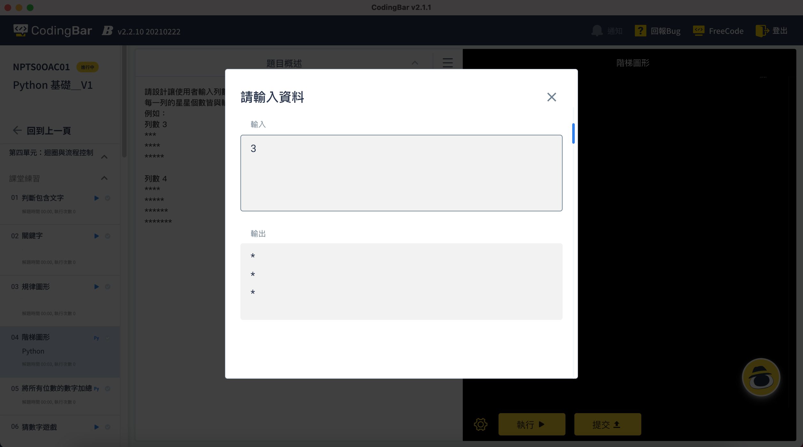

CodingBar Student Platform｜Coding Practice
Redesign the interface of the coding practice platform to support cross-device usage.
Evaluate existing features, learning habits, and practice needs through concept proposals,
discussions, and iterative revisions to make the design more user-friendly.
CodingBar is a youth programming education organization offering exclusive digital content, intelligent learning platforms, and teacher dispatch services. The Student Coding Practice Platform 3.0 redesign aims to enhance the learning interface's compatibility across different device sizes, addressing issues with tablet support and the efficiency of blockly programming learning.
Design a learning platform that adapts to different devices and supports both text-based and blockly programming languages.
Design the student platform's practice interface based on educational needs and text-based, blockly programming question types.
- UI / UX Design
- Design QA
Integrating Extreme Needs with a Unified Design Framework
Text-based and blockly programming have vastly different learning models and operational methods. Integrating these into a single design framework under diverse service and customer conditions is challenging. Designing an interface that is simple and intuitive for blockly learners while also supporting complex text-based programming questions is a major challenge.
Designing to Support Business Goals and Resource Constraints
Text-based programming practice is more suitable for computer devices, but the cost of providing computers is high for educational institutions. Tablets are a more affordable option for many providers. A key focus of the design is to minimize usability barriers on smaller devices.
Enhancing Overall User Experience and Stability
Successfully resolved issues with layout on smaller devices. After launched, the platform has seen no related bug reports, significantly improving the student learning experience.
Expanding Business Opportunities
Designing an interface that supports blockly programming meets diverse educational needs and opens new commercial possibilities, particularly for after-school programs for younger students.
Preparing for Future Developments
Reserved space in the coding area for tabbed pages to support multiple languages, file management, and teacher-student collaboration. This foundation will support the 4.0 update and uphold CodingBar’s core value of making programming fun.
Text-Based Programming Learners
- Navigation Issues: Finding the way back to the course page is not intuitive.
- AI Assistant Distractions: The AI assistant often blocks the view and cannot be closed, causing operational difficulties.
- Focus on Coding Area: Most time is spent in the coding area, and there's no need for persistent visibility of problem statements after they have been read.
- Unclosable Question Menu: The question menu occupies screen space without significant utility.
- Guidance for Obstacles: When stuck on a problem, guidance is needed, but it is unclear where to find resources.
- Popup Execution Window: The popup execution window hinders the ability to compare code with execution results. 
Blockly Programming Learners
- Younger students (under grade 4) are not adept at using a mouse, and the current interface is unusable on tablet devices.
- The learning model involves instructors guiding students step-by-step through programming concepts and demonstrating effects in real-time. Problem description blocks are not needed; instead, more screen space is required for displaying the project simulator.
After-School Program Providers
- Consider of costs, tablets are more cost-effective than desktops or laptops. However, the existing platform is nearly unusable on tablet devices.
Replan the interface layout based on needs, pain points, and platform functions without changing the workflow.
-
Maximize the Coding Area：
Text-Based Programming has long code length and makes reading difficult in a small coding window. On the other hand, Blockly programming requires ample space for display and manipulation. Maximizing the coding area is a primary consideration.
-
Flatten Learning Resources and Make Them Visible：
Bring auxiliary resource menus to the forefront, enhancing learning efficiency and resource utilization.
-
Function Menu on the Left：
Place question menus, notes, Q&A, and other functions in a list on the left side of the screen, allowing quick access with a thumb on tablet devices.
-
Improve Page Navigation：
Based on user intuition, move navigation to the top of the page.
-
Practice Screen：
By default, collapse the problem list and concentrate learning assistance functions such as question menu, notes, freecode, discussion, settings, and Agent on the left side.
Place problem assistance resources on the right side.

-
Fill-in-the-Blank Questions：
Specially designed for beginners, these questions need discussion regarding their definition and interaction.
Conceptually, they are "learning assistance resources," but not purely guiding hints.
Should they be placed within hints or integrated into the existing smart Agent to enhance interaction?

-
Notes, Freecode, Discussion, Settings：
Clicking to expand a window that shows and operates on a hierarchical level.

Feedback from Instructors and R&D Team


- Establish Menu Hierarchy： Define the left menu for primary functions and the right menu for secondary functions, which are subordinate to the problem statements. The right menu provides related descriptions, hints, handouts, and other downloadable resources. Adjust the size of the main and secondary menus to establish hierarchy.
-
Question menu：
Primarily used for switching between problems.
Design it to expand when clicked and automatically navigate to the selected problem, then close the menu.
-
Notes, FreeCode, Discussion：
To match the learning context, these functions will open on the right side of the screen when clicked from the function menu,
allowing students to reference code (or learning content) while taking notes,
asking questions, or comparing different coding approaches.
-
Execution Results：
When users click "Execute," the result window will expand and display alongside the code,
enabling students to compare the code with the results.
-
Question Statements, Hints, Solutions, and Resources：
Place these auxiliary learning resources on the right side using a toggle system.
Students can open or close these windows to stay focused on the coding area,
maximizing usable space for both tablet devices and blockly programming practice.